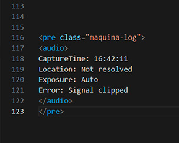

Homo Ludens maquínico
Sería un Homo Ludens actual pero ya no pinto en la piedra ahora juego con la máquina
el idioma máquina no tengo idea como manejarlo.
Si para Parikka las imágenes que vemos se logran gracias a la comunicación entre máquinas
ellas tienen su lenguaje propio se entienden entre ellas y los algoritmos escritos por hombres las diseñan.
¿Qué pasa entre la interpretación maquínica del algoritmo y la realidad?
Y en este juego el sistema IA va a ser mi prótesis. El Cyborg ya no necesita manifiesto.
Pronto el juego no va a ser nombrado
Nada de lo que se ve está quieto.
El territorio parece continuo, pero está hecho de restos, capas,
residuos de operaciones anteriores.
La ciudad se alisa para ocultar lo que circula debajo.
La máquina no ve el río.
Escucha variaciones, detecta patrones, mide intensidades.
El barro no tiene escala, pero deja registro.

No hay documento final.
Solo procedimientos: caminar, detenerse,
inclinar el cuerpo, acercar la oreja a una boca de tormenta.
El agua no responde, pero algo insiste.
La imagen se perfora para poder mirar.
La superficie falla y deja pasar ruido.
El lenguaje humano intenta explicar.
El lenguaje técnico intenta ordenar.
Ninguno alcanza.
Entre ambos aparece otra cosa:
una práctica sin garantías,
una medición de lo que no puede medirse,
un juego serio con sistemas que no fueron pensados para jugar.
No es archivo.
No es obra cerrada.
No es evidencia.
Es una operación abierta.
Una insistencia.
Una continuidad.